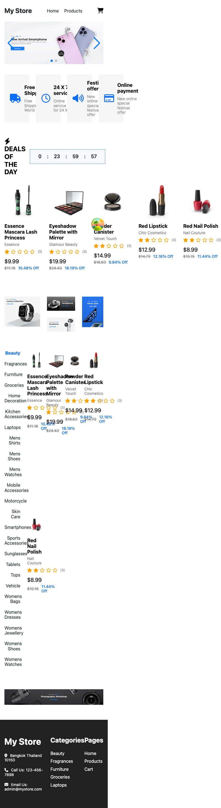

บทเรียน 14 · สร้างแอปทีละหน้า (Building Page by Page)
หน้า Home
The Home Page
สามเลนส์ตรวจทานพร้อมแล้ว มี Button component ตัวแรกให้ใช้ซ้ำได้แล้ว และ MainLayout ทั้ง Header กับ Footer ก็ผ่านทั้งสามเลนส์เรียบร้อยจากบทที่ 10–13 ถึงเวลาวน The Loop เต็มรูปแบบครั้งแรกกับหน้าที่ใหญ่ที่สุดของสัปดาห์นี้ — หน้า Home บทนี้ยังใช้ mock data ไปก่อนตามขอบเขตที่ตกลงไว้ตั้งแต่บทที่ 8 (ต่อข้อมูลจริงเป็นเรื่องของบทที่ 15) แต่ทุกอย่างอื่นตั้งแต่ banner carousel ไปจนถึงกริดสินค้าจะสร้างจริงในบทนี้ทั้งหมด
🎯 เป้าหมาย
งานของบทนี้คือส่วนตรงกลางของหน้า Home ทั้งหมด ที่บทที่ 10 ตั้งใจข้ามไปก่อน — ตอนนั้นสร้างแค่ Header กับ Footer เก็บพื้นที่ตรงกลางไว้ว่าง ๆ ผ่าน <Outlet /> ตอนนี้ถึงเวลากลับมาเติมส่วนนั้นให้เต็ม ดู screenshot หน้า Home อีกครั้ง คราวนี้ดูทั้งหน้าตั้งแต่บนสุดถึงล่างสุด

เทียบกับเวอร์ชันมือถือของแอปต้นแบบด้วย เพราะมีปัญหาที่บทที่ 11 เคยเจอกับ Header โผล่ซ้ำอีกครั้งในส่วนสินค้าตามหมวด

นี่คือสิ่งที่เกิดขึ้นเวลาเลย์เอาต์แบบ sidebar-เคียงข้าง-กริด ถูกเขียนไว้ตายตัวโดยไม่มี breakpoint คอยสลับกลับเป็นแนวตั้งบนจอแคบ — บทที่ 11 เจอปัญหานี้กับ Header แล้วแก้ไปแล้ว แต่ทีมที่สร้างแอปต้นแบบเองยังปล่อยบั๊กแบบเดียวกันหลุดออกไปในส่วนนี้ เป้าหมายของเราคือหน้า Home ต้องไม่เกิดปัญหานี้ซ้ำ ถือว่า "เสร็จ" เมื่อ:
- Banner carousel ด้วย Swiper เลื่อนซ้าย-ขวาได้จริง ความสูงประมาณ 500px ตรงกับที่วัดไว้ในบทที่ 8
- แถว feature cards 4 ใบ: Free Shipping, 24 X 7 service, Festival offer, Online payment
- Section "Deals of the Day" มี countdown timer และสินค้าลดราคา 5 ชิ้น
- Section สินค้าตามหมวด: เมนูหมวดหมู่ซ้าย + กริดสินค้าขวา (mock data หมวด Beauty 5 ชิ้น ตรงกับ screenshot) เรียงต่อกันแนวตั้งบนมือถือแทนที่จะซ้อนทับกันแบบภาพ mobile ด้านบน — รายละเอียดของเมนูหมวดหมู่เองจะกลับมาขัดเกลาอีกทีในบทที่ 16 ตอนนี้แค่ต้องไม่ทับกัน
- ยังไม่มีแถว promo tiles (Luxury Collection ฯลฯ) และแบนเนอร์ Photography Workshop — ตัดออกตามขอบเขตที่ตั้งไว้ตั้งแต่บทที่ 8
- รัน
npm run devแล้วเห็นหน้า Home เต็มรูปแบบที่ path"/"
📝 เขียน Prompt
ก่อนวาง prompt ไปเตรียมรูป banner ให้พร้อมก่อน เพราะ mock data อย่างเดียวไม่พอสำหรับรูปภาพ เข้า reference repo ที่ github.com/manjarb/varis-lab-project-06-react-ecommerce-app ดาวน์โหลดไฟล์ 01.png, 02.png, 03.png จากโฟลเดอร์ public/images/banners/ มาวางไว้ที่ตำแหน่งเดียวกันในโปรเจกต์ my-store (บทนี้ใช้แค่ 01.png กับ 02.png ใน carousel จริง ตรงกับจุดนำทางสองจุดที่เห็นใต้ banner ใน screenshot ด้านบน ส่วน 03.png เก็บไว้เผื่อใช้ภายหลัง)
ส่วน prompt เอง ไม่ต้องเขียนใหม่ — นำ prompt หน้า Home ที่เขียนไว้ในบทที่ 8 มาใช้ซ้ำได้เลย นี่คือ prompt เดิมทุกตัวอักษร ไม่มีการแก้ไข
สร้างหน้า Home ของเว็บ e-commerce "My Store" ตาม screenshot ที่แนบมา
บริบท: โปรเจกต์ React + TypeScript + Vite ที่ติดตั้ง Tailwind CSS v4 แล้ว
โครงสร้างจากบนลงล่าง:
- Header: โลโก้ข้อความ "My Store" ซ้าย, เมนู Home / Products ตรงกลาง, ไอคอนตะกร้าด้านขวา (พร้อม badge ตัวเลขเมื่อมีสินค้าในตะกร้า)
- Banner carousel เต็มความกว้าง สูงประมาณ 500px มีปุ่ม prev/next
- แถว feature cards 4 ใบ: Free Shipping, 24 X 7 service, Festival offer, Online payment (ไอคอน + หัวข้อ + คำอธิบายสั้น)
- Section "Deals of the Day" มี countdown timer และสินค้าลดราคา 5 ชิ้น
- Section สินค้าตามหมวด: เมนูหมวดหมู่ด้านซ้าย, grid สินค้าของหมวดที่เลือกด้านขวา (ใน screenshot หมวด Beauty มี 5 ชิ้น) (การ์ด: รูป, ชื่อ, ราคา, ราคาก่อนลดขีดฆ่า)
- Footer: ข้อมูลติดต่อ My Store, Categories, Pages (3 คอลัมน์)
ข้อกำหนดทางเทคนิค:
- ใช้ Tailwind utilities เท่านั้น ห้ามสร้างไฟล์ .css/.scss เพิ่ม
- Mobile-first: มือถือ 2 คอลัมน์, md ขึ้นไป 3, lg ขึ้นไป 4 คอลัมน์
- ใช้ semantic HTML (header, nav, main, section, footer) และใส่ alt ทุกรูป
- แยกเป็น component: Header, Banner, FeatureCard, ProductCard, Footer
ขอบเขต: ใช้ mock data ในไฟล์ไปก่อน ยังไม่ต้องต่อ API และยังไม่ต้องทำ routing
- ยังไม่ต้องทำแถว promo tiles (Luxury Collection ฯลฯ) และแบนเนอร์ Photography Workshop ที่เห็นใน screenshotสังเกตว่า prompt นี้เขียนไว้ตั้งแต่ก่อนจะมีโปรเจกต์จริงด้วยซ้ำ พูดถึง Header และ Footer ราวกับต้องสร้างใหม่ทั้งคู่ ทั้งที่ตอนนี้มีอยู่แล้วจากบทที่ 10–13 — ไม่เป็นไร วางไปแบบนี้ได้เลย เพราะ Agent เห็นไฟล์ Header.tsx กับ Footer.tsx อยู่แล้วในโปรเจกต์และจะไม่สร้างทับซ้ำ ก่อนวางจริงเพิ่มอีกหนึ่งบรรทัดท้าย prompt เดิม เพราะโปรเจกต์ตอนนี้มีของสองอย่างที่ตอนเขียน prompt ครั้งแรกยังไม่มี
ใช้ Swiper (ติดตั้งแล้ว) สำหรับ banner carousel และใช้ component Button ที่มีอยู่ใน shared/components🤖 สิ่งที่ Agent สร้าง
วาง prompt เต็มพร้อมรูป home_desktop.png และ home_mobile.png แนบคู่กัน (ตามเทคนิคที่บทที่ 8 แนะนำไว้) แล้วปล่อยให้ Agent ทำงาน ไฟล์ที่ได้ครบทุก component ตามที่ขอ ก่อนจะไปดูส่วนที่ตรวจทานได้ยากที่สุด (Home.tsx ที่ประกอบทุกอย่างเข้าด้วยกัน) มาดูสอง component ย่อยที่น่าสนใจก่อน เริ่มจาก FeatureCard ที่ใช้ซ้ำ 4 รอบในแถวบน
// src/shared/components/FeatureCard/FeatureCard.tsx
import { ReactNode } from "react";
interface FeatureCardProps {
icon: ReactNode;
title: string;
description: string;
}
export default function FeatureCard({ icon, title, description }: FeatureCardProps) {
return (
<div className="flex items-start gap-3 rounded-lg bg-gray-50 p-4">
<div className="text-primary" aria-hidden="true">{icon}</div>
<div>
<h3 className="font-semibold text-gray-900">{title}</h3>
<p className="text-sm text-gray-500">{description}</p>
</div>
</div>
);
}
ก่อนจะมี Product จริงจากบทที่ 15 เราต้องมี type ของ Product แบบย่อไปก่อน เก็บไว้ที่ตำแหน่งเดียวกับที่ type เต็มจะมาแทนที่ในบทหน้า
// src/features/products/types.ts (เวอร์ชันย่อ ใช้ field ที่ ProductCard ต้องใช้ตอนนี้ — บทที่ 15 จะเติมให้ครบ)
export interface Product {
id: number;
title: string;
price: number;
discountPercentage?: number;
thumbnail: string;
}
// src/features/products/mock.ts
import { Product } from "@/features/products/types";
export const MOCK_PRODUCTS: Product[] = [
{ id: 1, title: "Essence Mascara Lash Princess", price: 9.99, discountPercentage: 10.48, thumbnail: "/images/mock/product-1.png" },
{ id: 2, title: "Eyeshadow Palette with Mirror", price: 19.99, discountPercentage: 18.19, thumbnail: "/images/mock/product-2.png" },
{ id: 3, title: "Powder Canister", price: 14.99, discountPercentage: 9.84, thumbnail: "/images/mock/product-3.png" },
{ id: 4, title: "Red Lipstick", price: 12.99, discountPercentage: 12.16, thumbnail: "/images/mock/product-4.png" },
];
ตัวเลขราคาและเปอร์เซ็นต์ส่วนลดในนี้ไม่ได้สุ่มมาลอย ๆ — คัดลอกมาจากสินค้าจริงที่เห็นใน screenshot หมวด Beauty ด้านบน (Essence Mascara $9.99 ลด 10.48%, Eyeshadow Palette $19.99 ลด 18.19% ฯลฯ) ตอนต่อ API จริงในบทที่ 15 ตัวเลขพวกนี้จะถูกแทนที่ด้วยของจริงจาก dummyjson พอดี เพราะร้าน "Beauty" ใน dummyjson มีสินค้าชุดนี้อยู่จริง และนี่คือ ProductCard ที่ Agent สร้างตามที่ prompt ขอ — component ที่จะกลายเป็นตัวเอกของบทนี้
// src/features/products/components/ProductCard/ProductCard.tsx
import { Product } from "@/features/products/types";
interface ProductCardProps {
product: Product;
onClick?: () => void;
}
export default function ProductCard({ product, onClick }: ProductCardProps) {
const originalPrice =
product.discountPercentage != null
? product.price / (1 - product.discountPercentage / 100)
: null;
return (
<button
type="button"
onClick={onClick}
className="group rounded-lg border border-gray-200 bg-white p-3 text-left transition-shadow hover:shadow-md focus-visible:ring-2 focus-visible:ring-primary/50"
>
<img
src={product.thumbnail}
alt={product.title}
className="aspect-square w-full rounded-md object-cover"
/>
<h3 className="mt-2 line-clamp-2 text-sm font-medium text-gray-900">
{product.title}
</h3>
<p className="mt-1 flex items-baseline gap-2">
<span className="font-semibold text-primary">${product.price}</span>
{originalPrice && (
<span className="text-xs text-gray-400 line-through">
${originalPrice.toFixed(2)}
</span>
)}
</p>
</button>
);
}
ส่วนที่น่าดูสุดท้ายคือ banner — Agent ใช้ Swiper/SwiperSlide ตามที่บรรทัดเพิ่มเติมสั่งไว้จริง
// src/pages/Home/components/Banner/Banner.tsx
import { Swiper, SwiperSlide } from "swiper/react";
import { Navigation } from "swiper/modules";
import "swiper/css";
import "swiper/css/navigation";
const banners = [
{ id: 1, image: "/images/banners/01.png", alt: "New Arrival Smartphone ลดสูงสุด 40%" },
{ id: 2, image: "/images/banners/02.png", alt: "โปรโมชันแบนเนอร์ที่สอง" },
];
export default function Banner() {
return (
<Swiper modules={[Navigation]} navigation loop className="h-[500px] w-full">
{banners.map((banner) => (
<SwiperSlide key={banner.id}>
<img src={banner.image} alt={banner.alt} className="h-full w-full object-cover" />
</SwiperSlide>
))}
</Swiper>
);
}
💡 h-[500px] เป็น arbitrary value แบบเดียวกับ w-[1200px] ที่เจอใน Header ตอนบทที่ 11 — Agent วัดตัวเลขมาจาก screenshot ตรง ๆ อีกแล้ว รอบนี้ไม่ใช่บั๊ก เพราะความสูงคงที่ไม่ทำให้เกิด scrollbar แนวนอนแบบความกว้างคงที่ แต่ก็ยังเป็นตัวเลขที่ไม่มีที่มาจาก design token — เก็บไว้เป็นข้อสังเกต ไม่ใช่สิ่งที่ต้องแก้ในบทนี้
Agent ยังสร้าง CategoryMenu สำหรับส่วนสินค้าตามหมวดด้วย (ไม่แปะโค้ดตรงนี้ เพราะยังเป็นเวอร์ชันเรียบง่ายที่ยังไม่มีอะไรน่าสงสัยเป็นพิเศษ) และประกอบทุกอย่างเข้าด้วยกันใน Home.tsx — จุดที่ต้องตรวจทานอย่างละเอียดคือไฟล์นี้ เพราะเป็นจุดที่ปัญหาจริงซ่อนอยู่
🔍 ตรวจทาน
รันทั้งสามเช็กลิสต์จากบทที่ 11–13 กับ Home.tsx เจอของจริงสองจุดในไฟล์เดียวกัน และอีกหนึ่งจุดที่ banner
// src/pages/Home/Home.tsx — ส่วน Deals of the Day (ตัดมาบางส่วน)
<div className="grid grid-cols-5 gap-4">
{deals.map((p) => (
<div key={p.id} className="rounded-lg border border-gray-200 bg-white p-3">
<img src={p.thumbnail} alt={p.title} className="aspect-square w-full rounded-md object-cover" />
<h3 className="mt-2 text-sm font-medium">{p.title}</h3>
<p className="mt-1 font-semibold text-primary">${p.price}</p>
</div>
))}
</div>
// src/pages/Home/Home.tsx — ส่วนสินค้าตามหมวด (ตัดมาบางส่วน) เขียนแยกอีกชุด หน้าตาใกล้เคียงกันแต่ไม่เหมือนกันเป๊ะ
<div className="grid grid-cols-2 gap-4 md:grid-cols-4">
{categoryProducts.map((p) => (
<div key={p.id} className="rounded border p-2">
<img src={p.thumbnail} alt={p.title} className="w-full object-cover" />
<p className="mt-2 text-sm">{p.title}</p>
<p className="font-semibold text-primary">${p.price}</p>
</div>
))}
</div>สองปัญหาซ่อนอยู่ในโค้ดสองก้อนนี้ responsive — กริด Deals of the Day ใช้ grid-cols-5 ตายตัว ไม่มี breakpoint ใด ๆ เลย ย่อจอลงมาที่ 390px แล้วการ์ดสินค้าห้าใบจะถูกบีบเหลือกว้างไม่ถึง 80px ต่อใบ อ่านราคาแทบไม่ออก ทั้งที่ prompt สั่งไว้ชัดเจนว่ามือถือต้องมี 2 คอลัมน์ maintainability — สังเกตว่าทั้งสองก้อนเขียนการ์ดสินค้าซ้ำเป็นคนละชุด ทั้งที่หน้าตาแทบเหมือนกัน (รูป, ชื่อ, ราคา) นี่คือ ProductCard ที่เพิ่งเห็นด้านบนถูกสร้างไว้แล้ว แต่ Home.tsx กลับไม่ได้เรียกใช้มันเลยสักจุด เขียน JSX ของตัวเองแยกต่างหากทั้งสองที่แทน — กติกาจากบทที่ 13 ชัดเจนอยู่แล้ว: เจอ markup หน้าตาเดียวกันซ้ำตั้งแต่ 2 จุด ต้องรวมเป็น component เดียว
จุดที่สามอยู่ที่ปุ่มเลื่อนของ banner เปิด DevTools ตรวจปุ่ม prev/next สองปุ่มที่ Swiper สร้างให้อัตโนมัติ — มันเป็น <div class="swiper-button-prev">/swiper-button-next เปล่า ๆ ไม่มีข้อความและไม่มี aria-label เลย ปัญหารูปแบบเดียวกับไอคอนตะกร้าใน Header ที่บทที่ 12 เคยแก้ไปแล้ว — ปุ่มมีแค่ลูกศรเป็นภาพ ไม่มีอะไรให้ screen reader อ่านออกเสียงว่าปุ่มนี้ทำอะไร
🔧 Refactor
แก้ทั้งสองปัญหาในกริดพร้อมกัน เพราะแก้จุดเดียวกันทั้งคู่ — เปลี่ยนมาใช้ ProductCard ที่มีอยู่แล้ว แล้วเพิ่ม breakpoint ให้กริดครบตามที่ prompt สั่งไว้ตั้งแต่แรก
// src/pages/Home/Home.tsx — Deals of the Day หลังแก้
<div className="grid grid-cols-2 gap-4 sm:grid-cols-3 lg:grid-cols-5">
{deals.map((product) => (
<ProductCard key={product.id} product={product} />
))}
</div>
// src/pages/Home/Home.tsx — สินค้าตามหมวด หลังแก้
<div className="grid grid-cols-2 gap-4 md:grid-cols-3 lg:grid-cols-4">
{categoryProducts.map((product) => (
<ProductCard key={product.id} product={product} />
))}
</div>สองกริดนี้ต่างจำนวนคอลัมน์กันได้ (5 คอลัมน์บนจอกว้างสำหรับ Deals, 4 คอลัมน์สำหรับสินค้าตามหมวด) เพราะจำนวนสินค้าในแต่ละ section ไม่เท่ากัน แต่ทั้งคู่เรียก ProductCard ตัวเดียวกัน แก้หน้าตาการ์ดสินค้าที่จุดเดียวจากนี้ไป มีผลทั้งแอปทันที onClick ของ ProductCard เป็น prop ทางเลือก (onClick?: () => void) ยังไม่ส่งอะไรเข้าไปตอนนี้เพราะยังไม่มีหน้า Product Detail ให้ไปด้วย — บทที่ 16 จะแนะนำ hook useProductRoute ที่ผูก onClick นี้เข้ากับการนำทางจริง ส่วนปุ่มเลื่อนของ banner แก้ด้วยการตั้ง aria-label ให้ element ที่ Swiper สร้างขึ้นตอน mount ผ่าน onSwiper
// src/pages/Home/components/Banner/Banner.tsx — เพิ่ม onSwiper
<Swiper
modules={[Navigation]}
navigation
loop
onSwiper={(swiper) => {
(swiper.navigation.prevEl as HTMLElement | null)?.setAttribute("aria-label", "ภาพก่อนหน้า");
(swiper.navigation.nextEl as HTMLElement | null)?.setAttribute("aria-label", "ภาพถัดไป");
}}
className="h-[500px] w-full"
>สุดท้ายคือ CountdownTimer — Agent สร้างมันไว้ในโฟลเดอร์ของหน้า Home โดยตรง (src/pages/Home/components/CountdownTimer/) ทั้งที่มันไม่มีอะไรผูกกับ Home เป็นการเฉพาะเลย รับแค่ targetDate เข้ามาแล้วนับถอยหลัง เพชรเม็ดนี้ควรอยู่ใน shared/ ตั้งแต่แรกตามกฎ "ใช้ร่วมกันมากกว่าหนึ่ง feature ต้องย้ายไป shared" จากบทที่ 13 — ย้ายไปตอนนี้เลยก่อนหน้าอื่นจะมาขอยืมใช้แล้วต้อง import ข้าม pages ซึ่งผิดกฎโครงสร้างที่ตั้งไว้ตั้งแต่บทที่ 9
// src/shared/components/CountdownTimer/CountdownTimer.tsx
import { useEffect, useState } from "react";
interface CountdownTimerProps {
targetDate: string;
}
interface TimeLeft {
days: number;
hours: number;
minutes: number;
seconds: number;
}
function getTimeLeft(targetDate: string): TimeLeft {
const diff = new Date(targetDate).getTime() - Date.now();
if (diff <= 0) return { days: 0, hours: 0, minutes: 0, seconds: 0 };
return {
days: Math.floor(diff / (1000 * 60 * 60 * 24)),
hours: Math.floor((diff / (1000 * 60 * 60)) % 24),
minutes: Math.floor((diff / (1000 * 60)) % 60),
seconds: Math.floor((diff / 1000) % 60),
};
}
export default function CountdownTimer({ targetDate }: CountdownTimerProps) {
const [timeLeft, setTimeLeft] = useState(() => getTimeLeft(targetDate));
useEffect(() => {
const timer = setInterval(() => setTimeLeft(getTimeLeft(targetDate)), 1000);
return () => clearInterval(timer);
}, [targetDate]);
return (
<div className="flex items-center gap-2 rounded border border-primary/30 px-4 py-2 font-medium text-primary">
<span>{timeLeft.days}</span>:<span>{timeLeft.hours}</span>:
<span>{timeLeft.minutes}</span>:<span>{timeLeft.seconds}</span>
</div>
);
}
getTimeLeft ถูกแยกออกมาเป็นฟังก์ชันธรรมดานอก component — คำนวณล้วน ๆ ไม่แตะ state ไม่แตะ DOM ทำให้เทสต์ได้ง่ายและอ่านแยกจาก effect ที่ห่อมันไว้ ส่วน useState(() => getTimeLeft(targetDate)) ใช้ initializer function เพื่อให้ค่าเริ่มต้นถูกต้องตั้งแต่ render แรก ไม่ต้องรอ useEffect รอบแรกทำงานก่อนถึงจะเห็นตัวเลขที่ถูกต้อง
ทุกจุดที่ตรวจเจอแก้ครบแล้ว commit ไว้เป็นจุดย้อนกลับ
git add -A
git commit -m "feat: build Home page with mock data"
หน้า Home เสร็จสมบูรณ์ด้วย mock data — ยังไม่เชื่อมกับ dummyjson จริงสักจุดเดียว บทหน้าเราจะแทนที่ mock data ทั้งหมดนี้ด้วยข้อมูลจริงผ่าน TanStack Query โดยที่หน้าตาของหน้า Home จะไม่เปลี่ยนแม้แต่พิกเซลเดียว